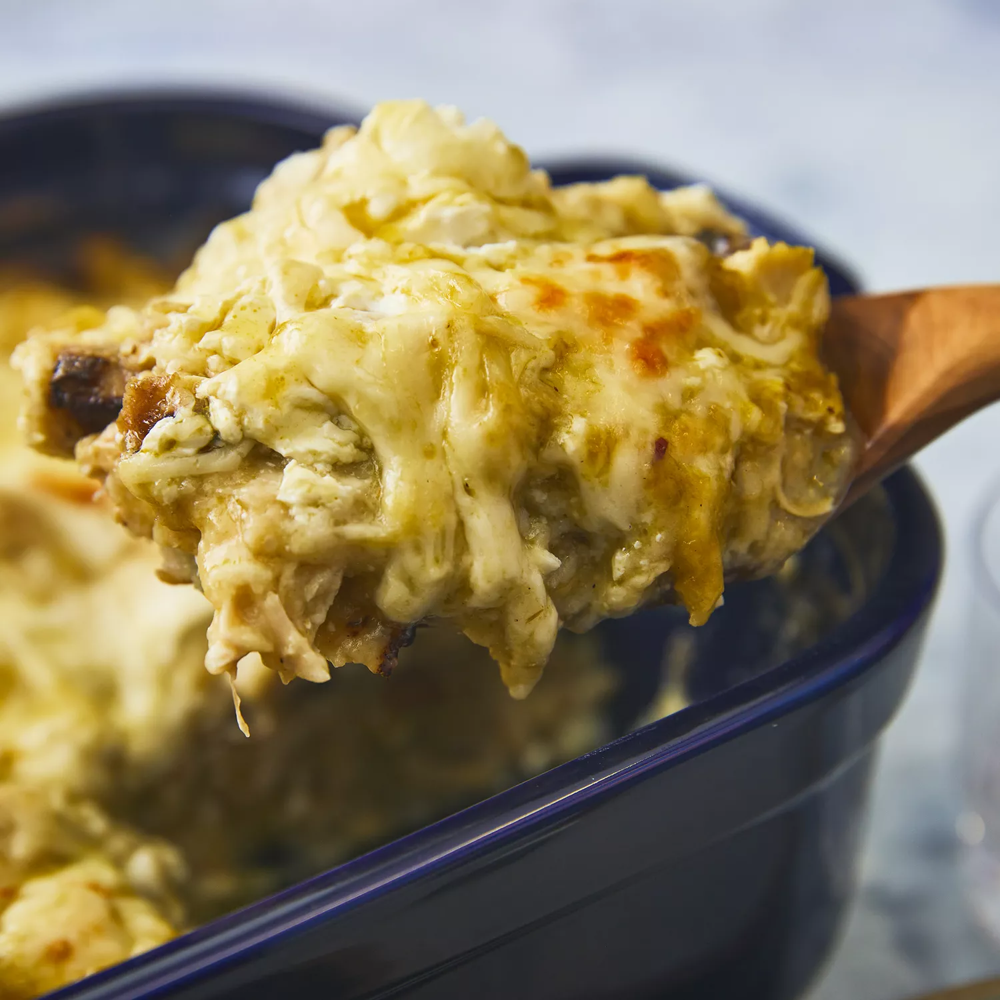

Green-chile-chicken

DESCRIPTION
This chicken enchilada casserole recipe is so good that my four picky kids eat it — and I got my picture in the paper for it! If you want to skip the charring step, simply tear the tortillas into quarters so they absorb the sauce better.
INGRIDIENT
- 4 skinless, boneless chicken breast halves
- garlic salt to taste
- 18 (6 inch) corn tortillas, torn in half
- 1 (8 ounce) container reduced fat sour cream
Steps
- Preheat the oven to 350 degrees F (175 degrees C). Butter a 9x13-inch baking dish.
- Meanwhile, char each tortilla half over the open flame of a gas stove burner using metal tongs until lightly puffed, about 1 minute.
- Cover and bake in the preheated oven for 45 minutes. Cool slightly before serving.
- Season chicken with garlic salt; arrange in the prepared baking dish. Bake in the preheated oven until no longer pink and juices run clear, about 45 minutes. An instant-read thermometer inserted into the center should read at least 165 degrees F (74 degrees C). Cool, shred, and set aside.